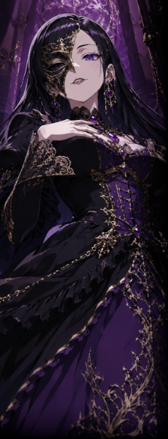

下層を中心として全層に影響力を持つギルド・ネットワーク。
即ち、会員間での横のつながりを支援するための協会や組合のようなもので、一個の組織ではない。
即ち、会員間での横のつながりを支援するための協会や組合のようなもので、一個の組織ではない。
違法な武器の製造および販売、盗品ブローカー、地下闘技場における興行、カジノ運営、麻薬売買、娼館斡旋、人身売買……。
島内の裏稼業を円滑に行うために、スヴァルトアルフは多かれ少なかれ関わりを持つ。
また、会員たちの間では【グリゴリシリーズ】と呼ばれる人造人間が流通し、
彼女たちは差し詰め「派遣労働者」のごとく裏社会の労働力となる。
島内の裏稼業を円滑に行うために、スヴァルトアルフは多かれ少なかれ関わりを持つ。
また、会員たちの間では【グリゴリシリーズ】と呼ばれる人造人間が流通し、
彼女たちは差し詰め「派遣労働者」のごとく裏社会の労働力となる。
スヴァルトアルフの教義は【混沌】である。
ラグナロク事件でも中立という立場の中、上層・中層・下層すべてに情報や武器を流し、混乱を煽った。
混沌を維持することが自分たちの利益になり、快楽となり、世界を回すと理解している。
ラグナロク事件でも中立という立場の中、上層・中層・下層すべてに情報や武器を流し、混乱を煽った。
混沌を維持することが自分たちの利益になり、快楽となり、世界を回すと理解している。
元々、下層マフィアはスヴァルトアルフと密な関係を持っていた。
しかしテセウスがマフィアを掌握した事でその関係性が分離、ある程度のバランスが保たれる事となる。
それでもスヴァルトアルフはテセウスに迎合するわけでもなく、対立するわけでもなく、混沌を煽る存在としてあり続けている。
しかしテセウスがマフィアを掌握した事でその関係性が分離、ある程度のバランスが保たれる事となる。
それでもスヴァルトアルフはテセウスに迎合するわけでもなく、対立するわけでもなく、混沌を煽る存在としてあり続けている。
原典
スヴァルトアルフは下層の経済を牛耳る巨大なギルドネットワークである。
違法武器製造と販売、盗品ブローカー、地下闘技場における興行、
カジノ運営、麻薬売買、娼館斡旋、人身売買など、
下層における裏稼業にスヴァルトアルフは多かれ少なかれ関わりを持つ。
違法武器製造と販売、盗品ブローカー、地下闘技場における興行、
カジノ運営、麻薬売買、娼館斡旋、人身売買など、
下層における裏稼業にスヴァルトアルフは多かれ少なかれ関わりを持つ。
スヴァルトアルフの教義は【 混沌 】である。
ラグナロク事件でも中立という立場の中、
上層・中層・下層すべてに情報や武器を流し、混乱を煽った。
争いという【 混沌 】を続けることが
利益になり、快楽となり、世界を回すと理解している。
ラグナロク事件でも中立という立場の中、
上層・中層・下層すべてに情報や武器を流し、混乱を煽った。
争いという【 混沌 】を続けることが
利益になり、快楽となり、世界を回すと理解している。
組織として非常に高いクローン技術を有しており、
【 グリゴリシリーズ 】と呼ばれるクローン兵を労働力などとして生み出している。
クローン技術はスヴァルトアルフが最高峰であり、
その独自技術は秘匿とされている。
他のクローン技術と違い非常に短時間で生成されるグリゴリシリーズは
20代程度でその生涯を終える。
【 グリゴリシリーズ 】と呼ばれるクローン兵を労働力などとして生み出している。
クローン技術はスヴァルトアルフが最高峰であり、
その独自技術は秘匿とされている。
他のクローン技術と違い非常に短時間で生成されるグリゴリシリーズは
20代程度でその生涯を終える。
又、元々下層マフィアはスヴァルトアルフと密な関係性を持っていた。
しかしテセウスがマフィアを掌握した事でその関係性が分離、
ある種のバランスが保たれる事となる。
それでもスヴァルトアルフはテセウスに迎合するわけでもなく、
対立するわけでもなく、混沌を煽る存在として立場を維持している。
しかしテセウスがマフィアを掌握した事でその関係性が分離、
ある種のバランスが保たれる事となる。
それでもスヴァルトアルフはテセウスに迎合するわけでもなく、
対立するわけでもなく、混沌を煽る存在として立場を維持している。

- 女性
- 年齢不詳
- 能力タイプ
- 不明
- 能力名
- 全知の偶像
- 一人称
- 私
- 二人称
- 貴方
- 三人称
- 彼、彼女、あの子、○○様
- ベース
- 気品のある女性口調
-
その他
口癖等 -
スヴァルトアルフのギルド長。自らも【セクト】という子組織を率いる。
美しい黒髪のロングヘアーに、紫の瞳。妖艶な雰囲気を纏った絶世の美女。
中世ヨーロッパの貴族のような装いで、顔の右半分を覆う仮面が特徴。
年齢不詳で、一部ではユグドラシル創成期から生きているという噂もある。
名前もあからさまな偽名と言われている。
美しい黒髪のロングヘアーに、紫の瞳。妖艶な雰囲気を纏った絶世の美女。
中世ヨーロッパの貴族のような装いで、顔の右半分を覆う仮面が特徴。
年齢不詳で、一部ではユグドラシル創成期から生きているという噂もある。
名前もあからさまな偽名と言われている。
彼女もエクシードであるようだが、その内容について判明している事実は乏しい。
その能力はあらゆる認識をずらし、彼女の姿を捉えきれる者はいないとされる。
見えているその美貌すら、本物なのか、それとも幻なのか――。
その能力はあらゆる認識をずらし、彼女の姿を捉えきれる者はいないとされる。
見えているその美貌すら、本物なのか、それとも幻なのか――。
「うふふ、可愛いわね。なにをやっても、所詮戯れよ」
「私はね、勝つ気なんて、ないのよ。ずっとずっと、ただ踊り続けて欲しいだけ」
「私はね、勝つ気なんて、ないのよ。ずっとずっと、ただ踊り続けて欲しいだけ」
原典
女性 年齢不詳
能力タイプ エスパー
能力名 全知の偶像 - イコン -
能力タイプ エスパー
能力名 全知の偶像 - イコン -
スヴァルトアルフのギルド長。
妖艶な絶世の美女。
美しい黒髪のロングヘアーに、紫の瞳。
中世ヨーロッパの貴族のような装いで、顔の右半分を覆う仮面が特徴。
年齢不詳で、一部ではユグドラシル創成期から生きているという噂もある。
名前もあからさまな偽名と言われている。
妖艶な絶世の美女。
美しい黒髪のロングヘアーに、紫の瞳。
中世ヨーロッパの貴族のような装いで、顔の右半分を覆う仮面が特徴。
年齢不詳で、一部ではユグドラシル創成期から生きているという噂もある。
名前もあからさまな偽名と言われている。
他者の認識をずらす
【 全知の偶像 -イコン- 】というエスパー能力を持つ。
その能力はあらゆる認識をずらし、
彼女の姿を捉えきれる者はいないとされる。
見えているその美貌すら、本物なのか、それとも幻なのか――。
【 全知の偶像 -イコン- 】というエスパー能力を持つ。
その能力はあらゆる認識をずらし、
彼女の姿を捉えきれる者はいないとされる。
見えているその美貌すら、本物なのか、それとも幻なのか――。
「うふふ、可愛いわね。なにをやっても、所詮戯れよ。」
「私はね、勝つ気なんて、ないのよ。ずっとずっと、ただ踊り続けて欲しいだけ。」
「私はね、勝つ気なんて、ないのよ。ずっとずっと、ただ踊り続けて欲しいだけ。」
性能：基礎５ｐステータス＋ボス特性１０ｐ

レミエム
- 性別・年齢
- 女性 12歳
- 能力タイプ
- サイキッカー
- 能力名
- The Power - ザ・パワー -
１０歳の時に能力に開花し、
名前を与えられたクローン兵グリゴリシリーズの少女。
アルビノのような白髪のショートカットに色白な肌、赤い眼を持つ。
能力性能が他のグリゴリシリーズよりも高く、マリアの護衛として働く。
名前を与えられたクローン兵グリゴリシリーズの少女。
アルビノのような白髪のショートカットに色白な肌、赤い眼を持つ。
能力性能が他のグリゴリシリーズよりも高く、マリアの護衛として働く。
能力は【The Power -ザ・パワー-
】。
単純な念動力のサイキッカー能力。
シンプルゆえ強く、応用力がある。彼女の力は他を寄せ付けない。
単純な念動力のサイキッカー能力。
シンプルゆえ強く、応用力がある。彼女の力は他を寄せ付けない。
性格はクール振舞っているが、その実は幼さゆえの激情型。
能力に開花してからの待遇の変化から、
現在の立場のプライドを持ち、
同時にその地位を失うことを極度に恐れている。
能力に開花してからの待遇の変化から、
現在の立場のプライドを持ち、
同時にその地位を失うことを極度に恐れている。
「・・・なんですかそれ。笑えないです。」
「煩い煩い！お前らと私を一緒にするな！私は…選ばれたんだ！！！」
「煩い煩い！お前らと私を一緒にするな！私は…選ばれたんだ！！！」
性能：基礎５ｐステータス＋ボス特性５ｐ
クラウン＝クラウン
- 性別・年齢
- 男性 年齢不詳
- 能力タイプ
- アンノウン
- 能力名
- 道化の様な影 - クラウンシャッテン -
黒のロングコートに長い黒のシルクハット、
そしてペストマスクを被ったマリア以上に正体不明の男。
地下闘技場【 ヘイズルーン 】をはじめ、
スヴァルトアルフの様々な興行に顔を出してプレゼンターとして活動している。
そのため素顔はわからないが非常に顔が広い。
芝居がかった口調と、道化師のような物言いが特徴。意外に陽気。
そしてペストマスクを被ったマリア以上に正体不明の男。
地下闘技場【 ヘイズルーン 】をはじめ、
スヴァルトアルフの様々な興行に顔を出してプレゼンターとして活動している。
そのため素顔はわからないが非常に顔が広い。
芝居がかった口調と、道化師のような物言いが特徴。意外に陽気。
影をキーワードに能力を発動させる
【 道化の様な影 - クラウンシャッテン - 】を持つ。
影による攻撃、トラップ、瞬間移動、ドッペルゲンガーと多彩な能力。
又、他の者は知る由もないが、
最下層の「影」がとあるPSY鉱石に集まり形作られたのがクラウンそのものである。
クラウンは影そのものであり、PSY鉱石を核とした擬似生命体と言える。
それ故にクラウンは自分では知りえない「人間」というものに
非常に興味を持ち、好意を持っている。
ただしその興味と好意は人間という存在や感情全てに対してのものであり、
恐怖や怒り、喜びや愛情、悲しみや憎悪などに境目がない。
それ故、時にはクラウンは善人にも見え、悪人にも見えるだろう。
彼の人間への興味と好意は「理解できない」からこそであり、
他人にとってクラウンの思考回路は理解の及ぶところではないのである。
【 道化の様な影 - クラウンシャッテン - 】を持つ。
影による攻撃、トラップ、瞬間移動、ドッペルゲンガーと多彩な能力。
又、他の者は知る由もないが、
最下層の「影」がとあるPSY鉱石に集まり形作られたのがクラウンそのものである。
クラウンは影そのものであり、PSY鉱石を核とした擬似生命体と言える。
それ故にクラウンは自分では知りえない「人間」というものに
非常に興味を持ち、好意を持っている。
ただしその興味と好意は人間という存在や感情全てに対してのものであり、
恐怖や怒り、喜びや愛情、悲しみや憎悪などに境目がない。
それ故、時にはクラウンは善人にも見え、悪人にも見えるだろう。
彼の人間への興味と好意は「理解できない」からこそであり、
他人にとってクラウンの思考回路は理解の及ぶところではないのである。
「おいでいでたる皆々様！紳士淑女にバーバリアン！今宵は大いにお楽しみを！！」
「来る者は拒まず深入りせず、去る者には一粒の麻薬を。それが我々という存在といったところです。」
「来る者は拒まず深入りせず、去る者には一粒の麻薬を。それが我々という存在といったところです。」
性能：基礎５ｐステータス＋ボス特性１０ｐ